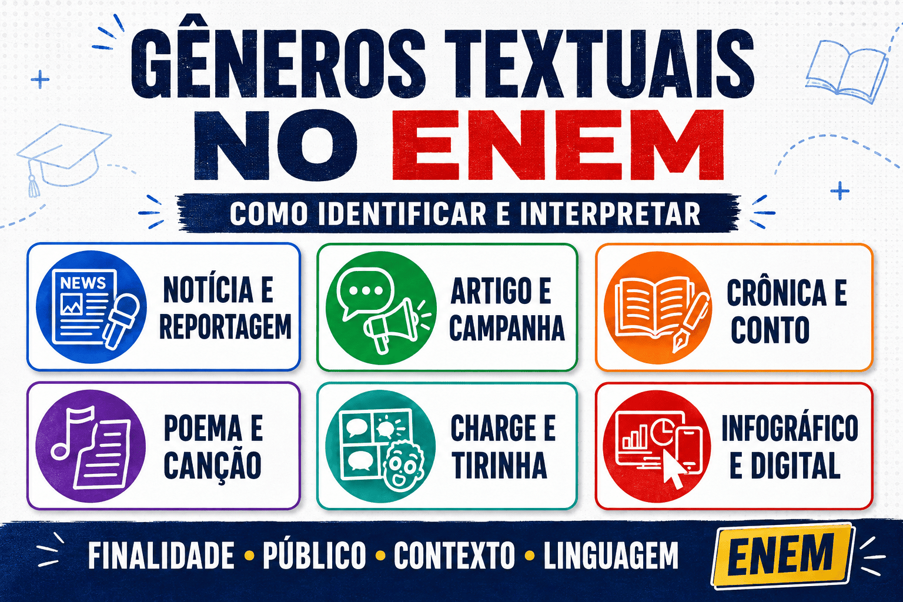

Gêneros Textuais no ENEM: como identificar e interpretar
Os gêneros textuais no ENEM aparecem em praticamente toda a prova de Linguagens. Notícias, reportagens, poemas, charges, tirinhas, campanhas publicitárias, crônicas, artigos de opinião, infográficos e postagens digitais são utilizados para avaliar a capacidade do candidato de compreender diferentes situações de comunicação.
O exame não costuma cobrar apenas a memorização das características de cada gênero. Geralmente, apresenta um texto concreto e solicita que o estudante reconheça sua finalidade, seu público, seu contexto de circulação, seu ponto de vista e os recursos empregados para produzir determinados efeitos de sentido.
Neste guia do Mestre Kira, você aprenderá o que são gêneros textuais, como diferenciá-los das tipologias, quais aparecem com frequência no ENEM e que estratégias utilizar para interpretar cada um deles.

O que são gêneros textuais?
Os gêneros textuais são formas de comunicação utilizadas socialmente para atender a diferentes necessidades. Sempre que alguém produz uma notícia, escreve uma receita, envia uma mensagem, publica uma campanha ou conta uma história, utiliza um gênero reconhecido dentro de determinada situação comunicativa.
Cada gênero costuma apresentar:
- uma finalidade comunicativa;
- um público ao qual se dirige;
- um contexto de produção e circulação;
- uma organização composicional;
- um estilo de linguagem;
- um suporte ou meio de divulgação;
- determinados recursos verbais e não verbais.
Uma notícia, por exemplo, procura informar sobre um acontecimento de interesse público. Uma campanha de conscientização busca influenciar comportamentos. Uma crônica pode refletir sobre uma situação cotidiana, enquanto um artigo de opinião defende explicitamente um ponto de vista.
Ideia essencial: reconhecer um gênero não significa apenas observar sua aparência. É necessário compreender quem comunica, para quem, com qual objetivo, em que contexto e por meio de quais recursos.
Qual é a diferença entre gênero textual e tipologia textual?
Gênero textual e tipologia textual são conceitos relacionados, mas não equivalentes.
Gênero textual é uma forma concreta de comunicação utilizada socialmente, como notícia, receita, crônica, propaganda, poema, carta, entrevista ou postagem.
Tipologia textual é uma forma de organização linguística presente no interior dos gêneros. As principais tipologias são narração, descrição, exposição, argumentação e injunção.
Um mesmo gênero pode combinar diferentes tipologias. Uma reportagem, por exemplo, pode:
- narrar um acontecimento;
- descrever um lugar;
- expor dados;
- apresentar opiniões de especialistas;
- estabelecer relações de causa e consequência.
Uma receita culinária é um gênero textual no qual predomina a tipologia injuntiva, pois orienta o leitor a realizar ações. Um artigo de opinião é um gênero predominantemente argumentativo, mas pode conter trechos narrativos, descritivos e expositivos.
Para aprofundar essa diferença, consulte o conteúdo sobre identificação dos tipos de texto .
Como os gêneros textuais são cobrados no ENEM?
A Matriz de Referência do ENEM valoriza a capacidade de relacionar os textos às situações em que são produzidos. Por isso, as questões podem exigir que o candidato:
- identifique a finalidade de um gênero;
- reconheça seu público-alvo;
- analise a relação entre texto verbal e imagem;
- identifique estratégias de persuasão;
- reconheça opiniões e pontos de vista;
- compare textos sobre o mesmo tema;
- compreenda o efeito de uma escolha linguística;
- relacione o gênero ao seu suporte de circulação;
- reconheça características de gêneros digitais;
- interprete aspectos culturais, históricos e sociais.
A questão pode apresentar uma propaganda e perguntar qual recurso aproxima a mensagem de seu público. Também pode comparar uma notícia e um artigo de opinião para verificar como cada gênero aborda o mesmo acontecimento.
No ENEM, o mais importante não é decorar uma lista de características. O candidato precisa perceber como o gênero funciona dentro da situação comunicativa apresentada.
Elementos que ajudam a identificar qualquer gênero textual
1. Finalidade comunicativa
Pergunte qual ação o texto pretende realizar. Ele deseja informar, convencer, orientar, denunciar, emocionar, divertir, explicar, narrar ou promover uma reflexão?
A finalidade ajuda a distinguir gêneros que podem tratar do mesmo assunto. Uma reportagem sobre vacinação procura informar e aprofundar o tema. Uma campanha sobre vacinação busca convencer o público a adotar determinado comportamento.
2. Emissor e público-alvo
Observe quem produziu a mensagem e para quem ela foi direcionada. Uma campanha de uma instituição pública, uma postagem de um influenciador e um artigo científico possuem autores, públicos e objetivos diferentes.
O público-alvo influencia:
- o vocabulário utilizado;
- o grau de formalidade;
- as informações apresentadas;
- as imagens escolhidas;
- os argumentos empregados;
- o meio de circulação.
3. Contexto de circulação
Identifique onde o texto circula. Ele foi publicado em um jornal, revista científica, rede social, site institucional, livro literário, embalagem, cartaz ou manual?
O suporte oferece pistas importantes. Uma sequência curta acompanhada de hashtags, marcações e imagens provavelmente pertence a um ambiente digital. Um texto organizado em título, subtítulo, data e informações objetivas pode corresponder a uma notícia.
4. Estrutura composicional
Cada gênero apresenta uma forma de organização relativamente reconhecível. Uma receita costuma apresentar ingredientes e modo de preparo. Uma notícia organiza informações essenciais sobre um acontecimento. Uma entrevista é construída por perguntas e respostas.
A estrutura não deve ser analisada isoladamente, pois os gêneros podem sofrer mudanças conforme o contexto e o suporte.
5. Linguagem utilizada
Observe se a linguagem é objetiva, subjetiva, formal, informal, técnica, poética, humorística ou persuasiva. Verifique também a presença de:
- verbos no imperativo;
- pronomes que se dirigem ao leitor;
- adjetivos avaliativos;
- dados e referências científicas;
- marcas de oralidade;
- metáforas, ironias e ambiguidades;
- perguntas retóricas;
- expressões próprias de determinados grupos.
6. Relação entre linguagem verbal e não verbal
Charges, tirinhas, anúncios, memes, cartazes e infográficos combinam palavras, imagens, cores, símbolos, enquadramentos e elementos gráficos. Nesses gêneros, a imagem participa diretamente da construção dos sentidos.
Para aprofundar esse assunto, leia: linguagem verbal, não verbal e mista .
Principais gêneros textuais que aparecem no ENEM
Notícia
A notícia apresenta informações sobre um acontecimento considerado relevante para determinado público. Geralmente procura responder a perguntas como:
- o que aconteceu;
- quem participou;
- quando ocorreu;
- onde ocorreu;
- como aconteceu;
- por que aconteceu.
No ENEM, observe o fato principal, a fonte das informações, o título, a seleção de dados e a maneira como o acontecimento foi apresentado.
Embora a notícia busque produzir um efeito de objetividade, sua construção envolve escolhas: quais informações aparecem no título, quem é citado e que aspectos recebem maior destaque.
Reportagem
A reportagem costuma aprofundar um assunto por meio de dados, entrevistas, depoimentos, contextualizações e explicações. Diferentemente da notícia, que normalmente se concentra em um acontecimento mais imediato, a reportagem pode investigar causas, consequências e diferentes perspectivas.
Ao interpretar uma reportagem, identifique:
- o tema central;
- as fontes consultadas;
- os dados apresentados;
- as perspectivas incluídas ou excluídas;
- a relação entre informações e opiniões;
- a conclusão sugerida pelo conjunto do texto.
Artigo de opinião
O artigo de opinião é um gênero argumentativo no qual o autor defende uma tese sobre um tema relevante. Para convencer o leitor, pode utilizar exemplos, dados, comparações, argumentos de autoridade e relações de causa e consequência.
Procure identificar:
- a tese defendida;
- os argumentos utilizados;
- as marcas de posicionamento;
- os possíveis contra-argumentos;
- a conclusão construída pelo autor.
Leia também: argumentação e persuasão nos textos .
Editorial
O editorial expressa o posicionamento de um jornal, revista ou instituição sobre determinado assunto. Por isso, normalmente não apresenta uma autoria individual destacada.
No artigo de opinião, o ponto de vista é associado ao autor. No editorial, o posicionamento representa institucionalmente o veículo de comunicação.
Campanha de conscientização
As campanhas procuram orientar ou modificar comportamentos relacionados à saúde, segurança, cidadania, meio ambiente e outros temas sociais.
São comuns os seguintes recursos:
- verbos no imperativo;
- frases curtas;
- imagens de impacto;
- apelo emocional;
- dados estatísticos;
- contato direto com o leitor;
- slogans de fácil memorização.
A questão pode perguntar qual estratégia foi utilizada para convencer o público ou como a imagem reforça a mensagem verbal.
Anúncio publicitário
O anúncio publicitário procura promover um produto, serviço, marca ou ideia. Sua linguagem costuma ser persuasiva e adaptada ao perfil do público-alvo.
Para interpretá-lo, observe:
- o produto ou ideia divulgada;
- o público que se pretende alcançar;
- os valores associados ao produto;
- a relação entre imagem e texto;
- os efeitos do slogan;
- as necessidades ou desejos explorados.
Um anúncio raramente vende apenas um objeto. Ele pode associar o produto a ideias como felicidade, liberdade, sucesso, juventude, segurança, beleza ou pertencimento.
Charge
A charge combina linguagem verbal e não verbal para construir humor, ironia ou crítica sobre um acontecimento social ou político. Sua compreensão pode depender do conhecimento do contexto em que foi produzida.
Observe:
- as personagens representadas;
- as expressões faciais;
- os objetos e símbolos presentes;
- as falas e legendas;
- a contradição que produz o humor;
- o acontecimento criticado.
Cartum
O cartum também utiliza humor e linguagem visual, mas costuma abordar comportamentos, relações humanas e situações mais universais, sem depender necessariamente de um acontecimento imediato.
A distinção entre charge e cartum deve considerar especialmente a relação do texto com o contexto histórico e social.
Tirinha
A tirinha apresenta uma pequena sequência narrativa organizada em quadrinhos. O humor frequentemente surge no último quadro, quando ocorre uma quebra de expectativa ou uma nova interpretação das falas anteriores.
Para compreender uma tirinha:
- acompanhe a sequência dos acontecimentos;
- observe as expressões das personagens;
- analise a relação entre fala e imagem;
- identifique a expectativa construída;
- perceba o que muda no quadro final.
Pratique com as questões sobre interpretação de charges e tirinhas .
Crônica
A crônica geralmente parte de acontecimentos cotidianos para construir humor, reflexão, crítica ou emoção. Sua linguagem pode aproximar-se da conversa e apresentar marcas de subjetividade.
Ao interpretar uma crônica, observe:
- a situação cotidiana apresentada;
- o ponto de vista do narrador;
- o tom humorístico, crítico ou reflexivo;
- as marcas de oralidade;
- a transformação do fato comum em reflexão.
Conto
O conto é uma narrativa breve que costuma concentrar personagens, espaço, tempo e conflito. Na prova, o fragmento pode exigir a análise do narrador, da construção das personagens, do conflito ou dos efeitos produzidos pela linguagem.
Não confunda autor e narrador. O autor é a pessoa real que produziu a obra; o narrador é a voz construída para contar a história.
Poema
O poema explora a linguagem de maneira expressiva e pode apresentar versos, ritmo, imagens poéticas, repetições e sentidos figurados.
Nas questões do ENEM, procure reconhecer:
- o tema;
- o eu lírico;
- as imagens construídas;
- os efeitos sonoros;
- as figuras de linguagem;
- a organização dos versos;
- a relação entre forma e conteúdo.
Letra de música
A letra de música pode ser analisada como manifestação artística, cultural e histórica. Além dos recursos poéticos, o ENEM pode explorar identidades sociais, variedades linguísticas, tradições populares e contextos de produção.
Quando houver informações sobre ritmo, performance ou contexto musical, considere que esses elementos também participam da construção da mensagem.
Texto de divulgação científica
O texto de divulgação científica apresenta conhecimentos especializados a um público mais amplo. Para isso, pode utilizar explicações, comparações, exemplos, definições e reformulações.
A questão pode solicitar que o candidato identifique:
- o fenômeno explicado;
- a informação principal;
- a função de um exemplo;
- a relação entre causa e consequência;
- a maneira como o conhecimento técnico foi adaptado ao público.
Infográfico
O infográfico combina textos, números, imagens, ícones, cores e elementos gráficos para apresentar informações de modo visualmente organizado.
Antes de responder à questão, verifique:
- o título;
- a fonte dos dados;
- o período analisado;
- as categorias comparadas;
- as unidades de medida;
- a função das cores e dos ícones;
- a conclusão sustentada pelos dados.
Carta aberta, manifesto e abaixo-assinado
Esses gêneros tornam pública uma reivindicação, denúncia ou tomada de posição. Geralmente procuram mobilizar a sociedade, pressionar autoridades ou defender uma causa coletiva.
Observe quem assina o texto, a quem ele se dirige, qual problema denuncia e quais ações solicita.
Manual, receita e texto instrucional
Esses gêneros orientam o leitor a realizar uma tarefa ou seguir determinado procedimento. Neles, é comum a presença de:
- verbos no imperativo ou no infinitivo;
- sequência de etapas;
- marcadores de ordem;
- linguagem direta;
- imagens explicativas;
- recomendações e advertências.
Memes e postagens digitais
Os gêneros digitais combinam linguagem verbal, imagens, referências culturais, hashtags, hiperlinks e elementos próprios das plataformas em que circulam.
Para interpretar um meme, o candidato pode precisar reconhecer:
- a referência cultural utilizada;
- o contexto em que foi publicado;
- a relação entre imagem e legenda;
- a ironia ou quebra de expectativa;
- a transformação de um texto anterior;
- o comportamento social criticado.
Nos gêneros digitais, o suporte não é um detalhe. Recursos como hashtags, compartilhamentos, comentários, marcações e hiperlinks podem modificar a forma de circulação e interpretação da mensagem.
Como interpretar um gênero textual no ENEM
1. Leia primeiro o comando
O comando indica qual aspecto deve orientar a leitura. Destaque expressões como:
- “a finalidade do texto”;
- “a estratégia utilizada”;
- “o efeito de sentido”;
- “o público-alvo”;
- “a crítica construída”;
- “a relação entre os textos”;
- “a característica do gênero”;
- “o recurso responsável pelo humor”.
2. Identifique a situação comunicativa
Procure responder:
- quem produziu o texto;
- para quem ele foi produzido;
- onde circula;
- qual problema ou necessidade motivou sua produção;
- qual reação pretende provocar.
3. Observe a fonte
A fonte pode indicar se o texto foi publicado por um jornal, órgão público, instituição científica, empresa, artista ou usuário de rede social. Essa informação ajuda a compreender a finalidade e a credibilidade da mensagem.
4. Relacione forma e finalidade
Não basta perceber que o texto apresenta verbos no imperativo. É preciso explicar por que foram utilizados. Em uma campanha, eles podem orientar diretamente o leitor e incentivar uma mudança de comportamento.
5. Analise conjuntamente palavras e imagens
Em gêneros multimodais, não interprete os elementos separadamente. Uma imagem pode reforçar, complementar ou contradizer a parte verbal.
6. Elimine alternativas incompatíveis
Desconfie de alternativas que:
- atribuem ao texto uma finalidade que ele não possui;
- ignoram o público ou o contexto;
- confundem informação com opinião;
- interpretam literalmente uma expressão irônica;
- consideram a imagem apenas decorativa;
- apresentam uma conclusão exagerada;
- mencionam uma característica verdadeira, mas irrelevante para o comando.
Exemplo de questão sobre gênero textual
Leia a mensagem de uma campanha:
“Sua atitude também limpa a cidade. Descarte o lixo no lugar certo.”
A mensagem apresenta uma frase de impacto, dirige-se diretamente ao leitor e utiliza um verbo no imperativo.
Nesse contexto, esses recursos têm como principal finalidade:
- A) narrar um episódio ocorrido durante a limpeza urbana;
- B) descrever tecnicamente o processo de reciclagem;
- C) incentivar o leitor a adotar um comportamento socialmente responsável;
- D) divulgar um produto destinado à coleta de lixo;
- E) apresentar uma opinião sem tentar influenciar o público.
Resposta correta: alternativa C.
O gênero, a referência direta ao leitor e o emprego do imperativo demonstram que a campanha pretende orientar uma ação. As demais alternativas atribuem ao texto finalidades que não correspondem à situação comunicativa.
Erros comuns nas questões sobre gêneros textuais
Classificar apenas pela aparência
Um texto com imagem não é necessariamente uma propaganda. Uma imagem também pode fazer parte de uma notícia, campanha, infográfico, postagem ou texto de divulgação científica.
Confundir assunto com finalidade
Dois textos podem discutir o mesmo assunto e possuir finalidades diferentes. Uma notícia informa sobre o desperdício de água, enquanto uma campanha procura convencer o leitor a mudar seus hábitos.
Ignorar o suporte
O ambiente de circulação interfere no funcionamento do gênero. Hashtags, comentários, compartilhamentos e hiperlinks são importantes para compreender os textos digitais.
Desconsiderar o público-alvo
As escolhas de linguagem são influenciadas pelo público. Uma campanha voltada para crianças pode utilizar cores, personagens e frases diferentes das empregadas em um comunicado destinado a profissionais.
Procurar uma tipologia única
Um gênero pode reunir narração, descrição, exposição e argumentação. O estudante deve identificar a sequência predominante sem imaginar que todas as partes do texto possuem a mesma organização.
Responder com base em opinião pessoal
A alternativa correta deve ser fundamentada no texto e no comando. O candidato pode discordar da mensagem, mas precisa reconhecer a finalidade e as estratégias efetivamente utilizadas.
Como estudar gêneros textuais para o ENEM
- Leia textos variados: tenha contato com notícias, crônicas, propagandas, poemas, charges, artigos, infográficos e gêneros digitais.
- Registre a situação comunicativa: anote finalidade, público, suporte, linguagem e estrutura.
- Compare gêneros: observe como notícia, campanha e artigo de opinião podem abordar um mesmo tema de maneiras diferentes.
- Resolva provas anteriores: identifique quais habilidades são exigidas e como as alternativas erradas são construídas.
- Analise textos multimodais: explique a função das imagens, cores, símbolos e recursos gráficos.
- Crie um caderno de erros: registre dificuldades relacionadas à finalidade, ao público, à argumentação e aos efeitos de sentido.
Para desenvolver essas habilidades, consulte também o guia de interpretação textual para o ENEM .
Resumo sobre gêneros textuais no ENEM
- Gêneros textuais são formas sociais de comunicação.
- Cada gênero possui finalidade, público, contexto, estrutura e linguagem.
- Gênero textual não é o mesmo que tipologia textual.
- Um gênero pode combinar diferentes tipologias.
- O ENEM valoriza o funcionamento do gênero dentro de uma situação comunicativa.
- Notícia e reportagem priorizam informações, mas possuem níveis diferentes de aprofundamento.
- Artigos de opinião e editoriais defendem posicionamentos.
- Campanhas e anúncios utilizam estratégias persuasivas.
- Charges, tirinhas e memes combinam linguagens e exploram humor ou crítica.
- Poemas e canções valorizam recursos expressivos e culturais.
- Infográficos organizam informações verbais, numéricas e visuais.
- A fonte e o suporte oferecem pistas importantes para a interpretação.
Quiz — Gêneros textuais no ENEM
Questões de interpretação — nível ENEM
Questão 1 — Leia a mensagem:
“Proteja quem você ama. Mantenha a vacinação em dia.”
Considerando sua construção e finalidade, essa mensagem pertence a uma campanha cujo principal objetivo é:
Questão 2 — Leia o trecho:
“A Biblioteca Municipal ampliará, a partir de segunda-feira, seu horário de atendimento. Segundo a administração, a medida busca facilitar o acesso de estudantes que trabalham durante o dia.”
Uma característica que aproxima o fragmento do gênero notícia é:
Questão 3 — Em uma charge, uma pessoa afirma que não possui tempo para descansar, enquanto aparece olhando continuamente para o celular. Ao fundo, um relógio indica que várias horas se passaram.
O efeito crítico da charge é construído principalmente pela:
Questão 4 — Leia o fragmento:
“O ônibus chegou lotado, como sempre. Ainda assim, todos tentaram entrar. Quando a porta finalmente fechou, alguém perguntou se havia espaço. A cidade inteira pareceu rir da pergunta.”
O fragmento aproxima-se da crônica porque:
Questão 5 — Leia o trecho de um artigo:
“A proibição absoluta dos celulares nas escolas não resolve, sozinha, os problemas de aprendizagem. É necessário ensinar os estudantes a utilizar criticamente as tecnologias.”
A característica argumentativa do fragmento é evidenciada pela:
Questão 6 — Um infográfico sobre desperdício de alimentos utiliza porcentagens, ícones de alimentos, cores e pequenas explicações.
Nesse gênero, a combinação desses elementos tem como função:
Questão 7 — Um meme utiliza a imagem de uma pintura famosa e acrescenta uma legenda sobre a dificuldade de acordar cedo.
A construção do meme depende:
Questão 8 — Sobre gênero e tipologia textual, é correto afirmar que:
Questão 9 — Leia o fragmento:
“As ilhas de calor são áreas urbanas que apresentam temperaturas mais elevadas do que as regiões vizinhas. O fenômeno está relacionado, entre outros fatores, à concentração de concreto e à redução da vegetação.”
O fragmento aproxima-se da divulgação científica porque:
Questão 10 — Considere duas produções sobre economia de água:
Texto I: reportagem com dados sobre o consumo de água nas cidades brasileiras.
Texto II: cartaz com a frase “Feche a torneira hoje para não faltar amanhã”.
Embora tratem do mesmo tema, os textos diferenciam-se principalmente porque:
Perguntas frequentes
Quais gêneros textuais mais aparecem no ENEM?
Notícias, reportagens, artigos de opinião, campanhas, anúncios, charges, tirinhas, crônicas, poemas, letras de música, infográficos, textos de divulgação científica e gêneros digitais aparecem com frequência na prova de Linguagens.
Como identificar rapidamente um gênero textual?
Observe a finalidade, o público-alvo, a fonte, o suporte, a estrutura e os recursos de linguagem. Esses elementos são mais seguros do que tentar reconhecer o gênero apenas por sua aparência.
Qual é a diferença entre gênero textual e tipo textual?
O gênero é uma forma concreta de comunicação, como notícia ou receita. O tipo textual é uma forma de organização linguística, como narração, descrição, exposição, argumentação ou injunção.
Um gênero pode apresentar mais de uma tipologia?
Sim. Uma reportagem pode combinar narração, descrição e exposição. Um artigo de opinião pode apresentar sequências argumentativas, expositivas e narrativas.
O ENEM exige a memorização das características dos gêneros?
O conhecimento das características é importante, mas o exame valoriza principalmente a capacidade de analisar como o gênero funciona em uma situação concreta de comunicação.
Como interpretar charges, tirinhas e memes?
Analise conjuntamente palavras, imagens, expressões, símbolos e contexto. Procure a contradição, a referência cultural ou a quebra de expectativa responsável pelo humor ou pela crítica.
Gramática pode ser cobrada em uma questão sobre gênero textual?
Sim. Verbos, pronomes, conectivos, pontuação e outras escolhas gramaticais podem ser analisados de acordo com a finalidade e os efeitos de sentido produzidos no gênero.
Conclusão
Estudar gêneros textuais para o ENEM significa compreender como a comunicação funciona em diferentes situações sociais. Mais do que reconhecer nomes e estruturas, o candidato precisa identificar finalidades, públicos, pontos de vista, estratégias argumentativas e relações entre linguagem verbal e não verbal.
Notícias, reportagens, campanhas, artigos, crônicas, poemas, charges, tirinhas, infográficos e gêneros digitais exigem procedimentos de leitura diferentes. Quando o estudante reconhece o funcionamento de cada gênero, consegue interpretar o texto com maior precisão e eliminar alternativas incompatíveis.
A melhor preparação combina leitura de textos variados, estudo das características comunicativas, resolução de provas anteriores e análise dos erros. Dessa forma, o conhecimento sobre gêneros deixa de ser apenas teórico e se transforma em uma estratégia prática para melhorar o desempenho em Linguagens.
Referências
- BAKHTIN, Mikhail. Estética da criação verbal. São Paulo: Martins Fontes.
- MARCUSCHI, Luiz Antônio. Produção textual, análise de gêneros e compreensão. São Paulo: Parábola Editorial.
- BRASIL. Instituto Nacional de Estudos e Pesquisas Educacionais Anísio Teixeira. Matrizes de Referência do ENEM .
- BRASIL. Instituto Nacional de Estudos e Pesquisas Educacionais Anísio Teixeira. Provas e gabaritos do ENEM .
Explore outros conteúdos
Continue sua preparação para a prova de Linguagens:
Explore Outros Conteúdos
Continue seus estudos acessando outras seções do site Mestre Kira: